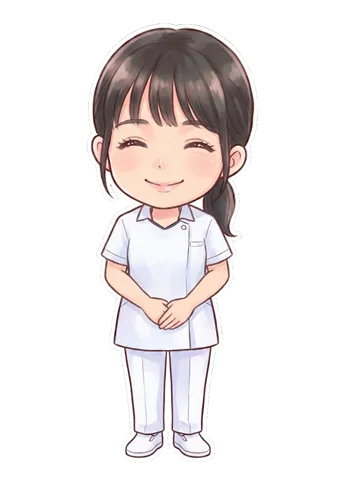
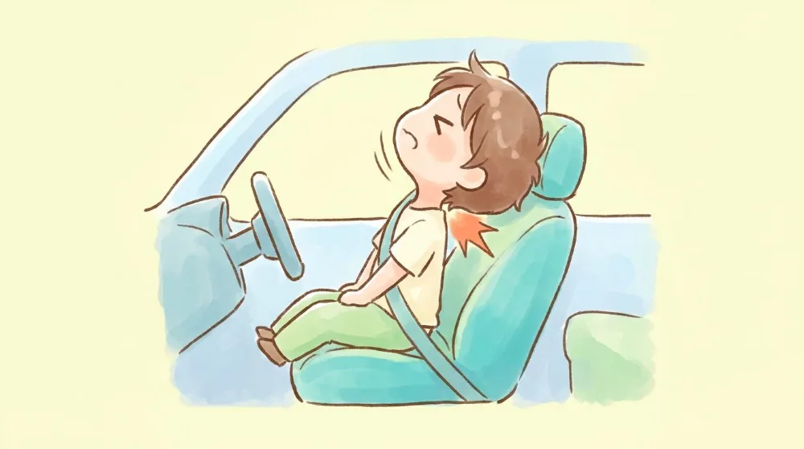
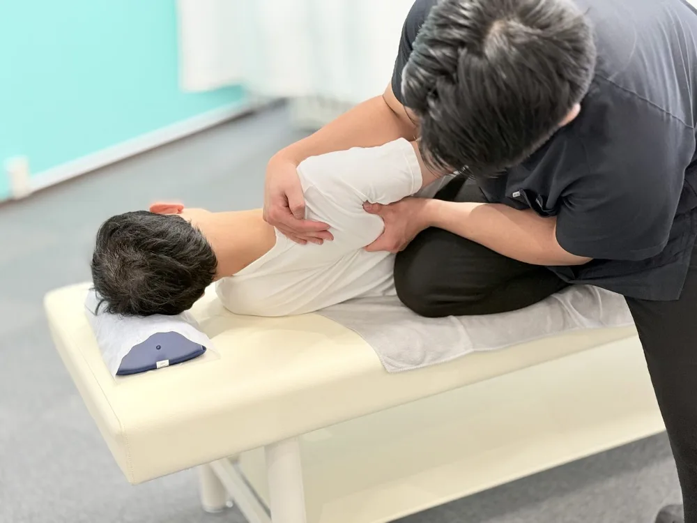
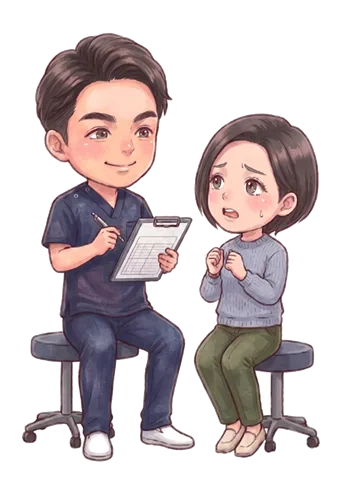
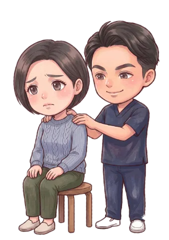
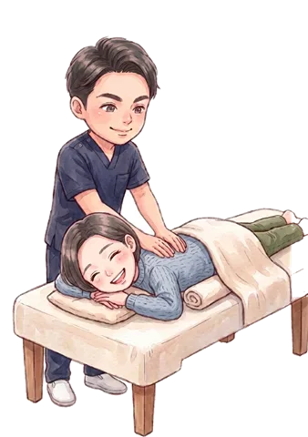
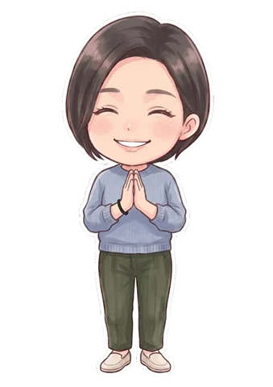
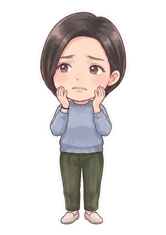
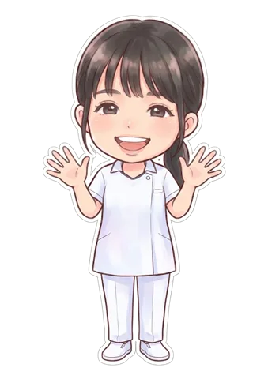

事故のあと、首が痛い・回らない・重だるい——。むちうちは事故直後より数日たってから症状が出やすいのが特徴です。レントゲンで「異常なし」と言われても痛みが続くのには理由があります。小牧市の交通事故専門院が、原因からケア・保険の疑問まで詳しくご説明します。
ひとつでも当てはまったら、我慢せずにご相談ください。

「病院？接骨院？何から始めれば…」の段階で大丈夫です。交通事故治療専門アドバイザーが、あなたの症状と状況でいま最初にやるべきことを無料でご案内します。検査が必要なら提携医療機関への紹介状を作成、保険や慰謝料でもめそうなら提携弁護士におつなぎ。窓口はぜんぶ小牧院ひとつで済みます。
人間の頭の重さは約5kg——ボウリングの球ほどもあります。追突の瞬間、シートベルトで固定された体に対して頭だけが激しく前後に振られ、細い首が全体重ならぬ「全頭重」を受け止めることになります。

追突されると頭が急激に後ろへ反り、直後に前へ振られます。この動きがムチのしなりに似ていることから「むちうち」と呼ばれ、正式には頸椎捻挫・外傷性頸部症候群などと言われます。時速わずか10km程度の軽い追突でも起こるのが特徴です。
衝撃で首まわりの筋肉・靭帯・関節包といった軟部組織が微細に傷つきます。これらはレントゲンには写りにくいため、病院で「骨に異常なし」と言われても痛みが残る大きな理由になります。MRIでも判別が難しいケースがあります。
首は脳と体をつなぐ神経の通り道です。損傷部位の炎症や筋肉の強い緊張が神経を刺激すると、腕のしびれ・頭痛・めまい・吐き気・全身のだるさなど、首から離れた場所の症状につながることがあります。
「そのうち治るだろう」と放置すると、痛みをかばう姿勢のクセがつき、周囲の筋肉に二次的な負担が広がって症状が慢性化しやすくなります。数年後まで痛みや天気による不調が残る方も少なくありません。

手足に力が入らない、しびれや痛みがどんどん強くなる、意識のもうろうとした感じや強い息苦しさがある——そのような場合は病院・整形外科での検査が必要です。「どの病院に行けばいいか分からない」なら、先に小牧院へお電話ください。提携医療機関をご紹介し、紹介状を作成します。検査後の併用通院までまとめてご案内できるので、あちこち調べ回る必要はありません。
むちうちの症状は首の痛みだけではありません。損傷のタイプによって「頸椎捻挫型（首・肩の痛みや可動域の制限）」「神経根症状型（腕や指のしびれ・脱力）」「バレー・リュー症状型（頭痛・めまい・耳鳴り・吐き気など自律神経系の不調）」などに分けられ、複数が重なることもあります。
特に注意したいのは、見た目では分からないため周囲に理解されにくく、無理をして悪化させてしまうケースです。事故後に少しでも違和感があれば「これくらいで…」と我慢せず、早めに専門家へご相談ください。
国家資格を持つ柔道整復師が、回復の段階に合わせて4つのステップで進めます。

事故の状況（追突の方向・スピード感・座席位置）から損傷部位を推測し、首の可動域・圧痛・神経症状の有無をひとつずつ検査。生活やお仕事への影響もお伺いし、施術計画を立てます。

炎症が強い急性期に無理な刺激は禁物です。ハイボルトや超音波などの物理療法機器を使い、深部の炎症と痛みを落ち着かせることを最優先。日常での首の使い方・寝る姿勢などのアドバイスも行います。

痛みが引いてきたら、手技で硬くなった首・肩まわりの筋肉をゆるめ、関節の動きを取り戻します。首だけでなく背骨・骨盤のバランスまで整えることで、回復のスピードと質を高めます。

頭痛・めまいなど自律神経系の不調が残りやすいのがむちうちの特徴。仕上げの時期は再発予防のストレッチやセルフケアの指導まで行い、後遺症を残さないことをゴールにします。
「事故に遭ったばかりで何をすればいいか分からない」という段階でもOK。保険会社への連絡の仕方など、最初の手順からご案内します。
事故の状況・お体の状態・お仕事やご家庭のご事情まで、時間をかけて丁寧にお伺いします。
痛む場所だけでなく全身のバランスを検査し、その日から状態に合わせた施術を始めます。
回復までの見通しと通院ペースを分かりやすくご説明。無理なく続けられる計画を一緒に立てます。
交通事故治療専門アドバイザーが保険会社とのやり取りをサポート。必要に応じて提携弁護士のご紹介も可能です。
費用・保険・慰謝料のことまで、何でもお答えします。
交通事故ではよくあるパターンです。事故直後は体が興奮状態にあり痛みを感じにくく、2〜3日後からむちうちが現れることが少なくありません。ただし受診が遅れるほど「事故によるケガ」だと証明しづらくなり、目安として事故から14日を超えると保険会社に認められにくくなると言われます。違和感の段階でも、まずは早めにご相談ください。
程度により個人差がありますが、軽めの場合で2〜4週間、症状が強い場合は3ヶ月以上かけてじっくりケアすることもあります。痛みが強い初期は週2〜3回、落ち着いてきたら週1回程度が一つの目安です。お仕事や家事のご都合に合わせ、無理のないペースをご提案します。
交通事故によるケガの施術は自賠責保険が適用されるため、被害者の方の窓口負担は原則0円です。費用の心配なく、必要なケアに専念していただけます。
当院独自の制度で、交通事故の施術を受けられた方へ通院状況に応じて最大2万円のお見舞金をお渡ししています。詳しい条件は来院時にご説明します。
はい、別のものです。慰謝料は保険会社から支払われる法的な賠償金で、通院日数などに応じて金額が決まります。お見舞金は当院が独自にお渡しするもので、慰謝料とは別に受け取れます。
通えます。医師の検査・経過観察を受けながら当院で施術を行う「併用通院」の方は多くいらっしゃいます。検査が必要な場合は提携医療機関への紹介状の作成にも対応しています。転院・併用の手続きもサポートしますのでご安心ください。
通院先を選ぶのは患者さんご自身の自由であり、保険会社が一方的に制限することはできません。対応にお困りの場合は当院の交通事故治療専門アドバイザーがサポートし、必要に応じて交通事故に強い提携弁護士もご紹介できます。一人で抱え込まずご相談ください。
休業損害として補償される場合があります。自賠責基準では原則1日あたり6,100円（収入により上限19,000円）が目安です。必要書類の準備などもご案内しますので、お気軽にお尋ねください。
受けられるケースが多くあります。ご自身の任意保険（人身傷害補償など）が使える場合や、過失割合によって自賠責が適用される場合があります。保険の状況を確認しながらご案内しますので、まずはご相談ください。
予約優先制です。LINEまたはお電話（0568-90-1841）でのご予約がスムーズです。交通事故によるケガの方は夜20時まで受付、祝日・連休も通常営業しています。
適切なケアをせずに放置した場合、頭痛・めまい・首肩の慢性痛などが後遺症として残ることがあります。症状が長引いた場合は後遺障害等級の申請という選択肢もあり、当院では提携弁護士のご紹介も含めてサポートできます。まずは早期にケアを始めることが最大の予防です。
あります。レントゲンで分かるのは主に骨の異常で、むちうちの本体である筋肉・靭帯など軟部組織の損傷は写りません。「異常なし＝ケガをしていない」ではないため、痛みや違和感が続くなら施術によるケアが必要な状態と考えられます。
「病院？接骨院？何から始めれば…」の段階で大丈夫です。交通事故治療専門アドバイザーが、あなたの症状と状況でいま最初にやるべきことを無料でご案内します。検査が必要なら提携医療機関への紹介状を作成、保険や慰謝料でもめそうなら提携弁護士におつなぎ。窓口はぜんぶ小牧院ひとつで済みます。

むちうちは見た目に分かりにくく、周囲に理解されづらいつらさがあります。放置すると頭痛やめまいなど二次的な不調につながり、回復までの道のりも長くなりがちです。「事故から時間がたつ前に、専門家に診てもらう」——これが回復と適正な補償の両方への近道です。
BTG接骨院 小牧院では、自賠責保険で窓口負担0円・夜20時まで受付・保険や慰謝料のサポートまで、通いやすい環境を整えてお待ちしています。「これくらいで行っていいのかな？」という段階でも、どうぞお気軽にご相談ください。
このページを閉じる前に、LINEで「首の痛み・むちうちがつらい」と一言送ってみてください。アドバイザーから、あなた専用の「次にやること」が返ってきます。相談は無料、しつこい営業は一切ありません。

交通事故による首の痛み・むちうちのことなら、BTG接骨院 小牧院へ。
LINE・お電話で、無料相談を受け付けています。